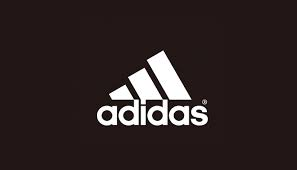
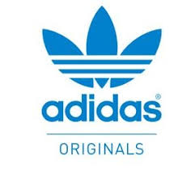

adidas 公司簡介
發展沿革

一位有著鞋匠技術的德國業餘運動員－Adi Dassler，從1920年代開始致力於製作手工運動鞋。
之後，參加奧運的世界運動員穿著他做的鞋子獲得佳績，他的名氣在國際間逐漸響亮起來。
1948 年，Adi Dassler用自己的外號（Adi）加上姓氏（Dassler）的頭三個字母來註冊他的產品，
他先後發明了七百多項專利運動商品。然而，家族內部鬥爭以及落後的市場策略導致Adidas動蕩不安，
一度走入低迷，直到Adi Dassler的長子Horst開始接管公司。具有非凡行銷天賦的Horst Dassler，
建立了金字塔型推廣模式，
率先將adidas 體育用品在視覺上與運動員、運動隊、大型比賽以及相關體育活動聯系起來，
利用行銷活動建立品牌形象，讓adidas風靡全世界。
Adidas 在專業運動遭受到其他運動品牌瓜分市場後，
在品牌精神理念帶領下，陸續推出其他具有流行時尚特色的品牌系列，
不僅整合了品牌精神也提供消費者更多元的選擇。運動用品和潮流服飾漸漸的畫上等號，引領潮流的體育形象已轉至一般、休閒的型態。
品牌系列

adidas的品牌分成為三個系列：
1. adidas 運動性能 Performance：顧名思義就是舉凡專業運動器材、衣服、用具，都是屬於此一系列。
我們在一般的運動用品店、或是百貨公司的運動用品部門，所看到、接觸到的，多是屬於專業系列的產品。
2. adidas 運動經典 Originals：有別於專業運動，屬於比較流行性、潮流性的服飾。舉凡和Diesel的合作、或是與其他流行廠商之間的合作，幾乎都是這一個系列的產品。除了特約的店家外，不會在百貨公司的運動用品樓層開立Originals專櫃，而多開立在流行精品區的樓層以免混淆。
3. adidas 運動風格 Sport Style：這個精品部門由山本耀司設計，包括男女運動鞋、 服裝和配件，屬於高階商品。
連到第2頁
連到第3頁
連到第4頁